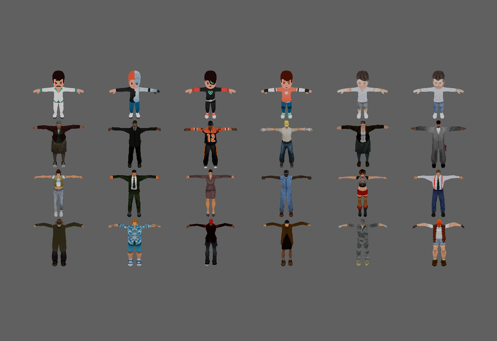
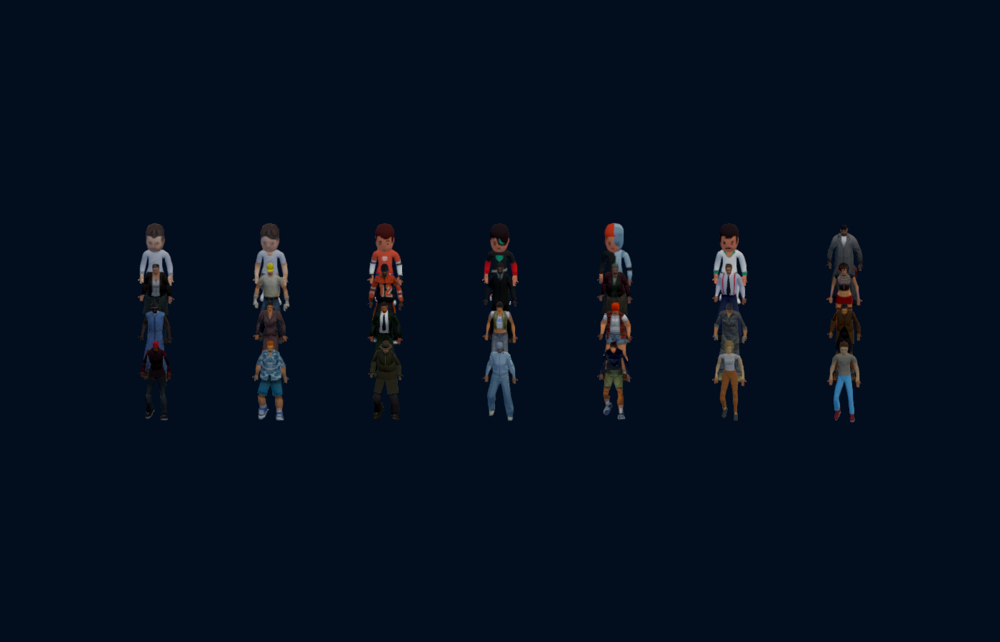

24 novas aparências; catálogo civil de 28 visuais. Mantidos 140 pedestres por proximidade, elenco no solo e escolha livre nas salas.


GTA: Rockstar Games / DMA Design / Rockstar North, conteúdo proprietário, procedência GTA Stuff. Kenney: CC0. Licenças e fontes completas em Licencas/People150. Testes nativos e fixtures aprovados; sem teste de crossplay ao vivo ou benchmark FPS nesta entrega.